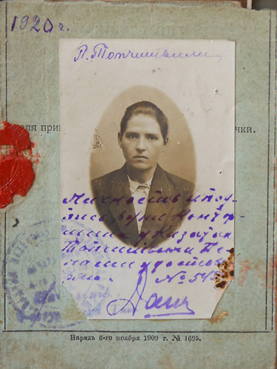
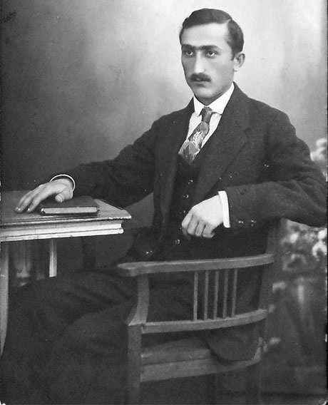

Мои предки
Меня интересует любая информация об этих людях. Если вам что либо известно о них, напишите мне на askoldich [ухо] yahoo [точка] com.
Николай Николаевич Сервецкий
Дедушка
1909 — окт. 1944
Надежда Георгиевна Сервецкая (Добржанская)
Бабушка
Родилась 29 Сен 1908, ст. Слободка Одесской обл. Ю.З. ж-д.
Умерла 5 Мая 1997, Киев
Надежда Сергеевна Добржанская (Буслова)
Прабабушка
Родилась в 1913
Георгий Георгиевич Добржанский
Прадедушка
Антонина Зиновьевна Сервецкая
Прабабушка
Родилась между 1877 и 1881, пос. Коростень
Сергей Михайлович Буслов
Прапрадедушка
Александра Дионисьевна Буслова (Савицкая)
Прапрабабушка
23 Апр 1871 — 9 Мар 1950
Григорий Георгиевич Добржанский
Двоюродный дедушка
Рита Георгиевна Добржанская
Двоюродная бабушка
Пелагея Сергеевна Топчишвили (Буслова)
Двоюродная прабабушка
7 Окт 1890, Бердичев — 7 Сен 1964, Москва

Николай Евдокимович Манжурин
Генерал-майор
Николай Николаевич Манжурин
Троюродный дедушка
26 Ноя 1924 — 1943
Мирон Александрович Топчишвили
